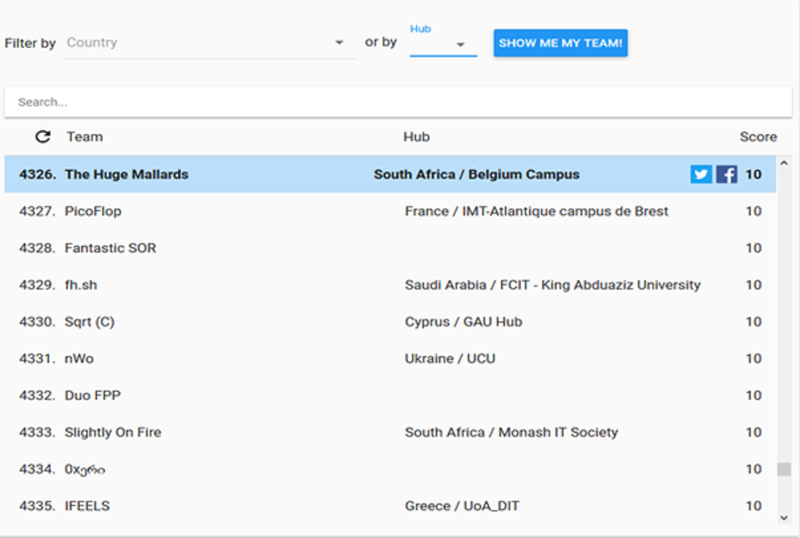
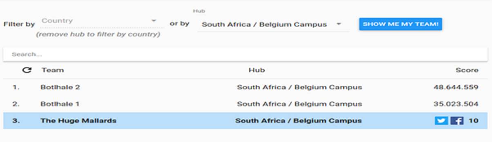
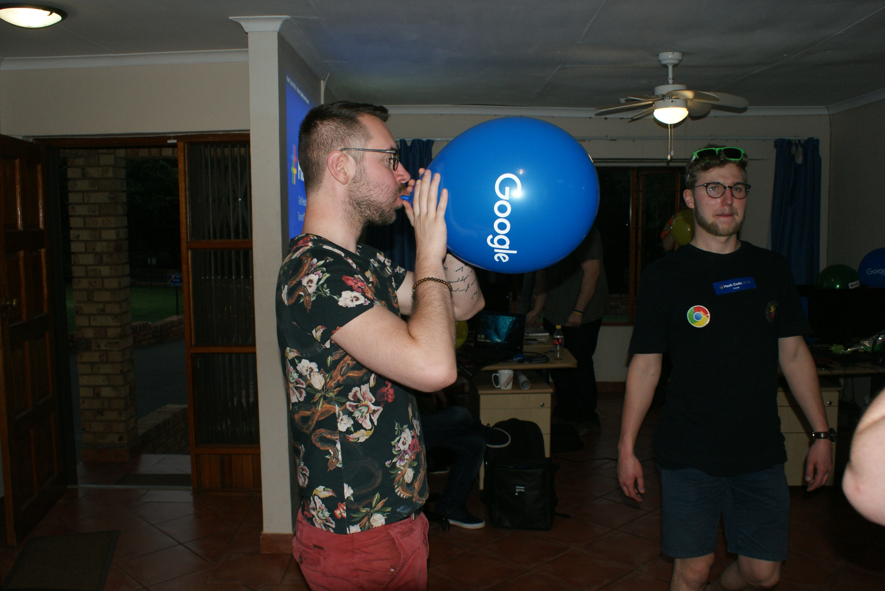

Ieder jaar organiseert Google de programmeerwedstrijd “Google Hash Code”. Dit jaar op 01/03/2018 vond de 5de editie plaats van deze wedstrijd. In deze wedstrijd nemen student en professionals uit Europa, Azië en Afrika het op tegen elkaar om zo rap en zo goed mogelijk een probleem op te lossen. Het is ieder jaar een probleem waar google zelf mee zit en de keuze van de programmeertaal mag je als kandidaat zelf kiezen.
De competitie is verdeeld over twee rondes, de online kwalificatieronde en de finaleronde waarin de 20 beste teams door Google uitgenodigd worden om op locatie het tegen elkaar op te nemen. Ik heb dit jaar meegedaan aan de kwalificatieronde. In deze ronde zouden we een algoritme moeten bedenken en dit zo goed mogelijk verbeteren en toepassen binnen een periode van 4 uur.
Ik deed mee aan deze wedstrijd samen met mijn medestudenten Mike Joosten en Michiel De Greef onder de teamnaam “The Huge Mallards”.
De wedstrijd begon om 19:00 begonnen de reclamefilmpjes op het youtube kanaal van Google en om 19:45 werd de opdracht beschikbaar gesteld op de jury pagina. De opdracht bestond eruit een bestand uit te lezen met cijfers. Deze cijfers stonden voor een grid beschrijving die een stad moest voorstellen, de hoeveelheid taxi’s, de hoeveelheid ritten, de start van deze ritten, het pad wat afgelegd moet worden, het moment dat de rit moest beginnen, de punten die uitgedeeld worden als een rit voltooid wordt, en nog een heel aantal andere parameters.
De bedoeling was een algoritme te bedenken dat met al deze verschillende waardes de ritten kon visualiseren en laten uitvoeren. Dit op de best mogelijk volgorde en op het juiste punt, om zo de ritten zo goed mogelijk uit te voeren.
Het klinkt allemaal veel makkelijker dan dat het was, laat ik je dat al maar snel vertellen. Het uitlezen van de file en het opsplitsen van de data in verschillende datasets was niet zo heel moeilijk, ik had dan oorspronkelijk ook een goed beeld op deze wedstrijd.
Maar toen kwam het moeilijke deel van de wedstrijd boven, het effectieve algoritme bedenken en toepassen. Ik heb uit deze wedstrijd geleerd dat wiskundige algoritmes verre van mijn sterkste kant is. Naarmate de wedstrijd vorderde zakte de moed mij steeds verder in de schoenen, geen enkel idee wat ik kon bedenken kwam in de buurt van het vinden van een oplossing.
Gelukkig hadden Michiel en Mike meer succes dan mij. Zij slaagde erin het eerste niveau van de wedstrijd ongeveer op te lossen waardoor we toch nog een magere 10 punten in de wacht hebben kunnen slepen.
Hierdoor zijn we tenminste niet als laatste geëindigd. Maar het resultaat is jammer genoeg toch maar pover, zeker als we dit vergelijken met de andere groepen van de Belgium Campus, waarvan één team er zelfs even in slaagde de top 20 binnen te breken.
Ik heb echter niet opgegeven en ben blijven door proberen tot 23.00, het einde van de wedstrijd. Jammer genoeg heb ik geen bijkomend resultaat kunnen boeken.
Uiteindelijk ben ik toch een beetje teleurgesteld. Ik wist op voorhand dat deze wedstrijd voornamelijk georganiseerd wordt voor universiteiten en onderzoekscentra, maar ik had toch op een iets beter resultaat gehoopt.
Ik ben wel blij dat ik meegedaan heb aan deze wedstrijd aangezien dit toch wel kan tellen als een echte wake-up call voor het belang van wiskundige algoritmes. Niet alle problemen zijn van het niveau dat ik op de opleiding voorgeschoteld krijg en sommige vragen een aanpak die heel wat meer wiskunde vereist.
Deze wedstrijd heeft mij met andere woorden pijnlijk duidelijk gemaakt waarom het vak “Math for IT” nu precies zo belangrijk is. Mocht ik dit beter onderhouden hebben ben ik vrij zeker dat ik het tijdens deze wedstrijd zeker tot een beter eind had kunnen brengen. Ik vind het ook belangrijk om dit expliciet te vermelden, zodat duidelijk wordt dat niet alles wat ik gedaan voor I-Talent even vlotjes verlopen is.
Aangezien het snel duidelijk werd dat ik deze wedstrijd niet tot een goed einde kon brengen ben ik wel blij dat ik niet heb opgegeven en ben blijven proberen tot het einde. Opgeven en blijven zoeken naar een probleem was zeker mijn sterkste punt tijdens deze wedstrijd.
Mijn zwakke kant was dan zonder twijfel mijn wiskunde. Ik wist dat het niet mijn beste punt was aangezien ik al veel moeite heb moeten doen om dit vak tot een goed einde te brengen, maar deze wedstrijd heeft duidelijk gemaakt dat er echt toch nog wel wat werk is op dit vlak.
